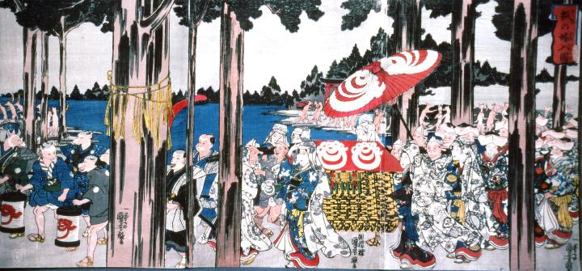

嫁入り行列に参加する狐たち。画面左から松明を持って先導する狐。提灯を持つ先立ち、これは奴装束である。次いで輿を中心とした花嫁の一団で、裃や内掛けを着て完全に人間に化けている。そして後方にはまた松明をもった狐が続く。
著作者：歌川国芳／出典：親書誌：A5_pushkin_0032：狐の嫁入図；キツネノヨメイリズ／日付：2011／資源識別子：A5_pushkin_0032_0001_0000
Copyright (c)2010- International Research Center for Japanese Studies, Kyoto, Japan. All rights reserved.